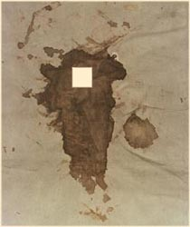
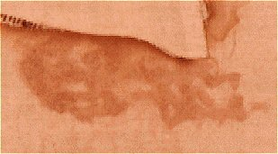

Monday, July the 26th, 2004
back to: title, date or indexes
The majestic eight-volume Dictionary of Stains by Walter Mad is mentioned in our thrilling postage-stamp mystery serial Unspeakable Desolation Pouring Down From The Stars, chapter six of which appears today. The Dictionary is extremely hard to track down today, even from the most assiduous antiquarian book dealer, although a copy of volume four was recently sold on eBay for an unimaginable sum. As a sop to readers gnashing their teeth in frustration that they cannot read this great work in full, here are a couple of pictures of stains:
